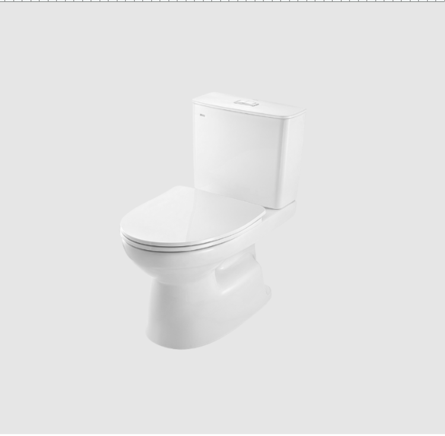
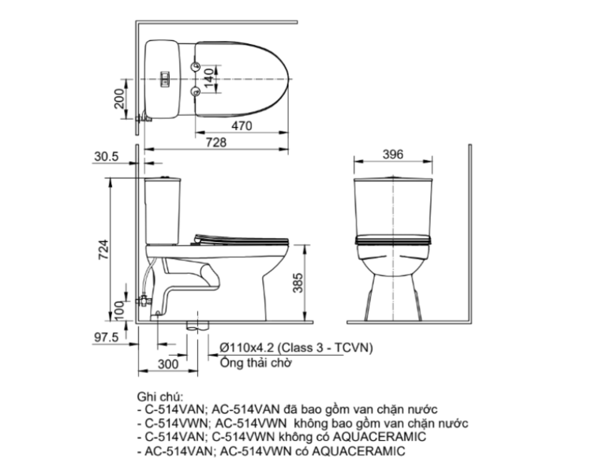

Bồn cầu 2 khối AC-514VWN có kiểu dáng 2 khối với thiết kế gọn gàng, kích thước tổng thể 728 x 396 x 724 (mm), phù hợp với nhiều diện tích phòng tắm, kể cả không gian nhỏ. Sản phẩm có màu trắng tinh tế, mang đến vẻ đẹp sang trọng và sang trọng.Thiết kế bồn cầu 2 khối AC-514VWN thông minhNắp đóng êm, không gây tiếng ồn khó chịu khi sử dụng.Nắp ngồi mỏng tạo sự thanh thoát, cảm giác nhẹ nhàng và tinh tế cho sản phẩm.Nắp tank nước mỏng, tôn lên vẻ hiện đại và thời trang, tối ưu hóa không gian đặt vật dụng.Tính năng nổi bật của bồn cầu 2 khối AC-514VWNCông nghệ men sứ Aqua Ceramic: Đây là công nghệ độc quyền của INAX, mang đến bề mặt bồn cầu luôn sáng bóng, chống bám cặn và bám bẩn hiệu quả, giúp vệ sinh bồn cầu nhanh chóng, dễ dàng hơn, từ đó duy trì sự sạch sẽ cho không gian phòng tắm.Hai mức xả tiết kiệm nước: Bồn cầu được trang bị 2 chế độ xả linh hoạt: 4.8L cho xả đại và 3.0L cho xả tiểu, giúp tối ưu hóa lượng nước sử dụng, góp phần bảo vệ môi trường và tiết kiệm chi phí sinh hoạt.Hệ thống xả hiệu ứng siphon: Cơ chế xả xoáy mạnh mẽ, tạo lực hút lớn, giúp xả sạch mọi chất bẩn chỉ trong một lần xả, đồng thời vận hành êm ái, không gây ra tiếng ồn lớn.Video giới thiệu công nghệ Aqua Ceramic độc quyền của INAXĐể tạo sự đồng bộ cho không gian phòng tắm, có thể kết hợp bồn cầu 2 khối AC-514VWN với các mẫu chậu rửa mặt đặt bàn INAX AL-299V, AL-295V, chậu lavabo L-312V. Các sản phẩm này có thiết kế và chất liệu tương đồng, tạo nên tổng thể hài hòa và sang trọng.>>> Xem thêm: Các loại bồn cầu vệ sinh được ưa chuộng và sử dụng phổ biến nhất trên thị trườngBản vẽ bồn cầu 2 khối AC-514VWNThông số kỹ thuậtThông tinChi tiếtChất liệuSứKiểu dáng2 khốiKích thước728 x 396 x 724 (mm) (Dài x Rộng x Cao)Tính năng- Công nghệ men sứ Aqua Ceramic giúp bề mặt sáng bóng, không bám cặn, bám bẩn- Hai mức xả tiết kiệm nước 4.8L/3.0L (xả đại/xả tiểu)- Hệ thống xả hiệu ứng siphon, xả bay mọi chất bẩnThương hiệuINAXThiết kế- Nắp đóng êm, không gây tiếng động khó chịu- Nắp ngồi thiết kế mỏng, mang lại vẻ nhẹ nhàng tinh tế- Nắp tank nước mỏng, hiện đại và thời trang, tối đa hóa diện tích đặt vật dụng- Phù hợp không gian nhỏ, diện tích hẹpCông nghệChống bám cặn, chống bám bẩn, độ bền caoMàu sắcTrắngKhác- Sản phẩm không bao gồm van chặn nước- Gợi ý sản phẩm đi kèm: chậu rửa đặt bàn AL-299V, AL-295V, chậu lavabo L-312V- Hotline tư vấn và bảo hành: 18006633
Bồn cầu 2 khối AC-514VWN
Bàn cầu thương hiệu INAX.
Đã cập nhật danh sách yêu thích.
DANH MỤC: Bàn cầu
MÃ SẢN PHẨM: AC-514VWN
DEPTH: 396mm
HEIGHT: 724mm
WIDTH: 728mm
Bồn cầu 2 khối AC-514VWN có kiểu dáng 2 khối với thiết kế gọn gàng, kích thước tổng thể 728 x 396 x 724 (mm), phù hợp với nhiều diện tích phòng tắm, kể cả không gian nhỏ. Sản phẩm có màu trắng tinh tế, mang đến vẻ đẹp sang trọng và sang trọng.Thiết kế bồn cầu 2 khối AC-514VWN thông minhNắp đóng êm, không gây tiếng ồn khó chịu khi sử dụng.Nắp ngồi mỏng tạo sự thanh thoát, cảm giác nhẹ nhàng và tinh tế cho sản phẩm.Nắp tank nước mỏng, tôn lên vẻ hiện đại và thời trang, tối ưu hóa không gian đặt vật dụng.Tính năng nổi bật của bồn cầu 2 khối AC-514VWNCông nghệ men sứ Aqua Ceramic: Đây là công nghệ độc quyền của INAX, mang đến bề mặt bồn cầu luôn sáng bóng, chống bám cặn và bám bẩn hiệu quả, giúp vệ sinh bồn cầu nhanh chóng, dễ dàng hơn, từ đó duy trì sự sạch sẽ cho không gian phòng tắm.Hai mức xả tiết kiệm nước: Bồn cầu được trang bị 2 chế độ xả linh hoạt: 4.8L cho xả đại và 3.0L cho xả tiểu, giúp tối ưu hóa lượng nước sử dụng, góp phần bảo vệ môi trường và tiết kiệm chi phí sinh hoạt.Hệ thống xả hiệu ứng siphon: Cơ chế xả xoáy mạnh mẽ, tạo lực hút lớn, giúp xả sạch mọi chất bẩn chỉ trong một lần xả, đồng thời vận hành êm ái, không gây ra tiếng ồn lớn.Video giới thiệu công nghệ Aqua Ceramic độc quyền của INAXĐể tạo sự đồng bộ cho không gian phòng tắm, có thể kết hợp bồn cầu 2 khối AC-514VWN với các mẫu chậu rửa mặt đặt bàn INAX AL-299V, AL-295V, chậu lavabo L-312V. Các sản phẩm này có thiết kế và chất liệu tương đồng, tạo nên tổng thể hài hòa và sang trọng.>>> Xem thêm: Các loại bồn cầu vệ sinh được ưa chuộng và sử dụng phổ biến nhất trên thị trườngBản vẽ bồn cầu 2 khối AC-514VWNThông số kỹ thuậtThông tinChi tiếtChất liệuSứKiểu dáng2 khốiKích thước728 x 396 x 724 (mm) (Dài x Rộng x Cao)Tính năng- Công nghệ men sứ Aqua Ceramic giúp bề mặt sáng bóng, không bám cặn, bám bẩn- Hai mức xả tiết kiệm nước 4.8L/3.0L (xả đại/xả tiểu)- Hệ thống xả hiệu ứng siphon, xả bay mọi chất bẩnThương hiệuINAXThiết kế- Nắp đóng êm, không gây tiếng động khó chịu- Nắp ngồi thiết kế mỏng, mang lại vẻ nhẹ nhàng tinh tế- Nắp tank nước mỏng, hiện đại và thời trang, tối đa hóa diện tích đặt vật dụng- Phù hợp không gian nhỏ, diện tích hẹpCông nghệChống bám cặn, chống bám bẩn, độ bền caoMàu sắcTrắngKhác- Sản phẩm không bao gồm van chặn nước- Gợi ý sản phẩm đi kèm: chậu rửa đặt bàn AL-299V, AL-295V, chậu lavabo L-312V- Hotline tư vấn và bảo hành: 18006633
DANH MỤC: Bàn cầu
MÃ SẢN PHẨM: AC-514VWN
DEPTH: 396mm
HEIGHT: 724mm
WIDTH: 728mm